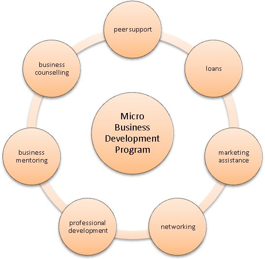

A great business idea and access to financing are important in starting a new venture. But we hear from the entrepreneurs involved in our Micro Business Development Groups that several other factors are equally important as they move toward launching or expanding their businesses.
We can help design a business skills development plan that will focus on your individual learning needs. The skills development component of the program usually focuses on: group workshops or presentations covering a variety of business topics; business mentoring activities; individual training programs; and individual business counselling.
Your new business networks will include the Program Facilitator, your Micro-Business Development Group, the lending insitution associated with each site and your Area Committee.
In addition to facilitating access to learning opportunities relating to the marketing of your business, your Group may also wish to paricipate in local events that will inform the public about your products and services. Such events can include trade shows, group business expositions, regional publications and local television, business presentations to other agencies in your region, and an opportunity for cooperative development.
When you join the Micro Business Development Program, the first component is a breif training and orientation period where you learn about the program, how our peer circles operate and your responsibilities as part of a group. During these trainig sessions you will also learn about our lending process.
